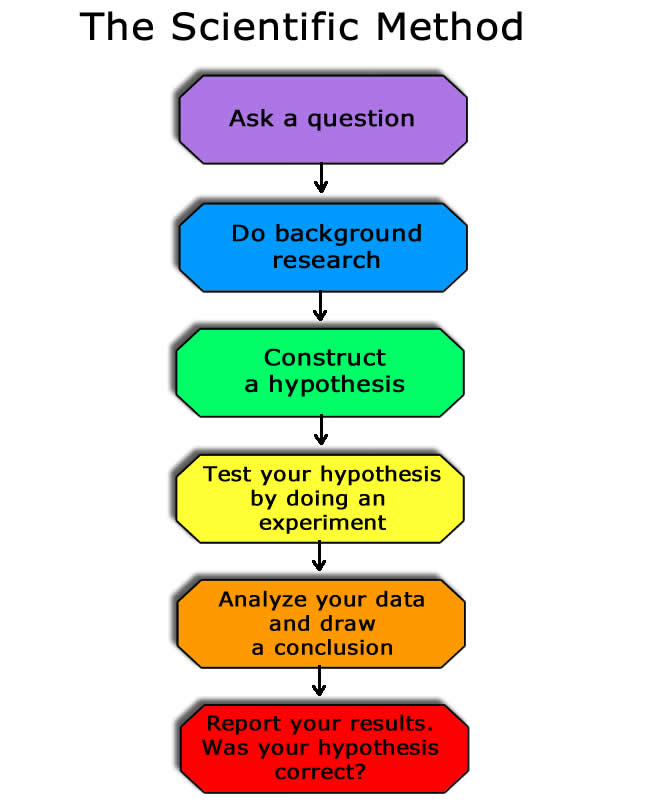

source("https://goo.gl/WdnYlz")
Unlike p-value based methods, there is no cutoff for IC differences, but rather a rule of thumb
| Difference | Interpretation |
| 0–2 | No/only weak evidence of a difference |
| 2–6 | Some evidence of a difference |
| 6–10 | Strong evidence |
| 10+ | Very strong evidence |
AICcmodavg R package)From my work on dating OE texts:
| Name | Value | Name | Value | Name | Value |
|---|---|---|---|---|---|
| DiagMC | 0.11 | VtoC | 0.12 | TopPPSpro | 0.09 |
| DiagCC | 0 | SCan | 0 | TopObjSpro | 0 |
| DiagSC | 0 | ScrSC | 0 | TopPPSbj | 0 |
| AuxVRoot | 0 | NGenSbj | 0 | TopObjSbj | 0 |
| AuxVSC | 0 | NGenObj | 0.41 | NegCon | 0 |
| DiagVP | 0 | Rel | 0.16 | Expl | 0 |
REML = FALSE in R)
lme4 has two methods for fitting models
REML = FALSE to the lmer functionoutcome ~ predictor1 + predictor2outcome ~ predictor1 + predictor2 + (1 | person) + (1 | word)outcome ~ predictor1 + predictor2 + (1 + predictor1 | person) + (1 + predictor2 | word)(Specifically: \(N(N-1)/2\))
\[\begin{bmatrix} var_{0,0} & \cdots \\ cor_{0,1} & var_{1,1} & \cdots \\ cor_{0,2} & cor_{1,2} & var_{2,2} & \cdots \end{bmatrix} \]
lme4 for this
(1 + predictor1 + predictor2 || subject)(1 | subject) + (0 + predictor1 | subject) + (0 + predictor2 | subject)summed.bigram is effectively zerocelex.frequency
data {
int<lower=0> N; // # of rats
int<lower=0> T; // # of observations
real x[T]; // Days elapsed
real y[N,T]; // Weights
}
parameters {
real alpha[N]; // Intercept
real beta[N]; // Slope
real mu_alpha;
// ...
}
model {
mu_alpha ~ normal(0, 100);
// ...
alpha ~ normal(mu_alpha, sigma_alpha);
beta ~ normal(mu_beta, sigma_beta);
for (n in 1:N)
for (t in 1:T)
y[n,t] ~ normal(alpha[n] + beta[n] * x[t], sigma_y);
}